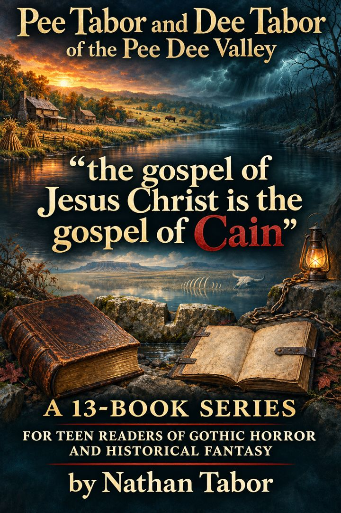

13 books · Historical gothic for teen readers
Pee Tabor and Dee Tabor of the Pee Dee Valley
Two first cousins know the fords, the winter herd, and the people who keep their valley alive. In Book 7, a white surveyor crosses the river. He claims their land in God’s name. Dee looks down at the water and sees no reflection.

The Gospel of Jesus Christ is the Gospel of Cain
The thirteen books
The first six books stay with the valley before the encounter. At the midpoint, the man at the river brings a claim the cousins will have to answer. The books that follow trace stolen land, hunger, the slaughter of buffalo, and a hearing where people name what happened.
Nathan Tabor’s launch statement
THE NATHAN TABOR WAY
IM COMING TO GETCHA (song on Pandora - Roman’s 13:4)…. The truth WILL NOT BE SUPPRESSED AND MANIPULATED SO A-Z CAN BE RAPED AND PILLAGED
MOVE BITCH IS ON NOW … DISTURB THE FAKE PEACE
In this series, the fight over what gets written down is part of the fight over the land. Dee writes names in the margins. People testify in the open. The account stays where others can read it.
The children’s edition
Thirteen shorter read-aloud stories follow Pee and Dee from the creeks and cornfields through the first encounter and its aftermath.